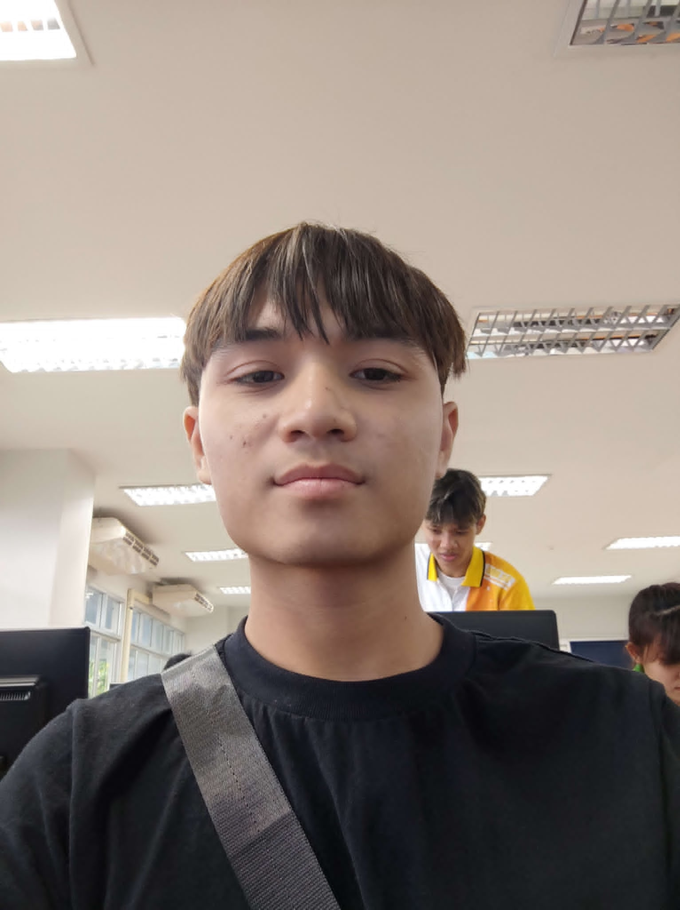
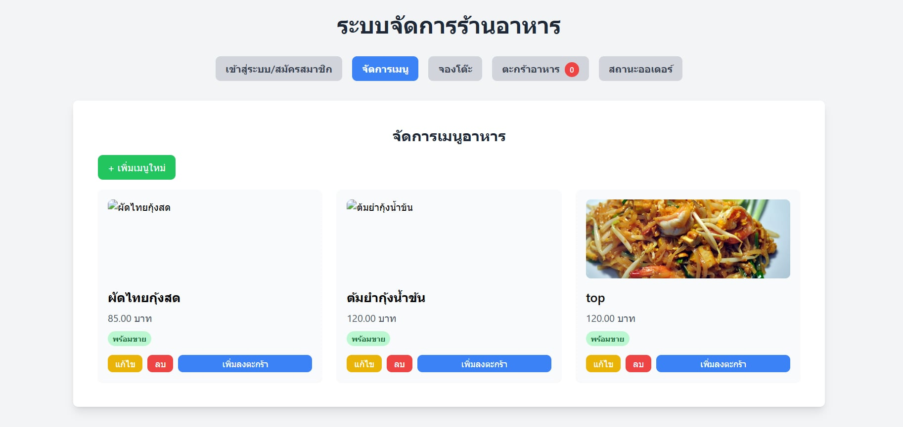
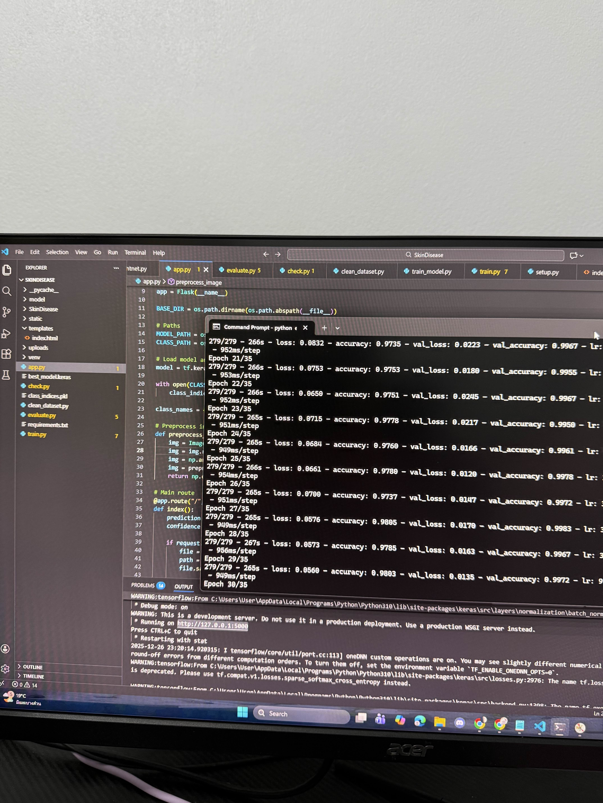
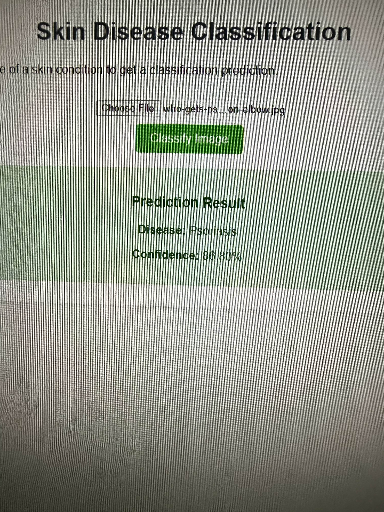
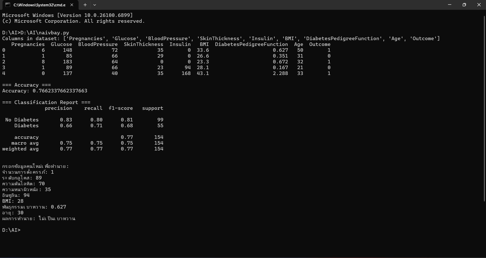
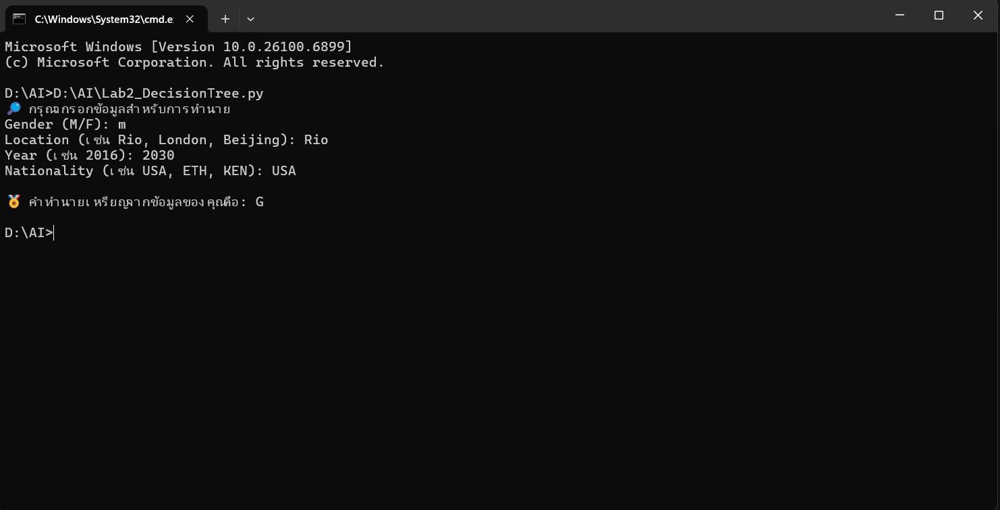
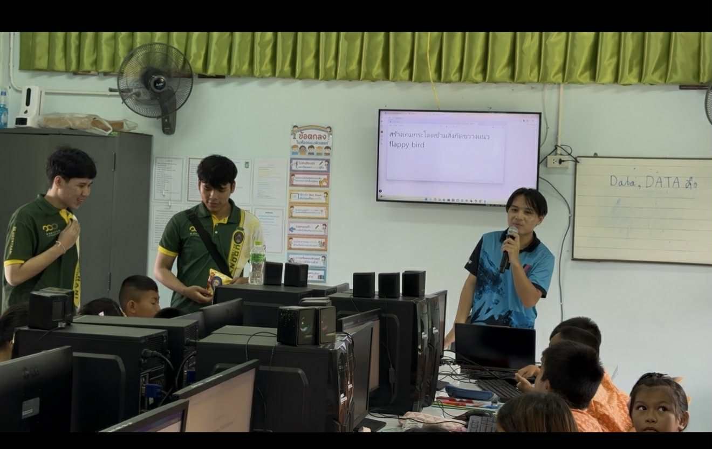
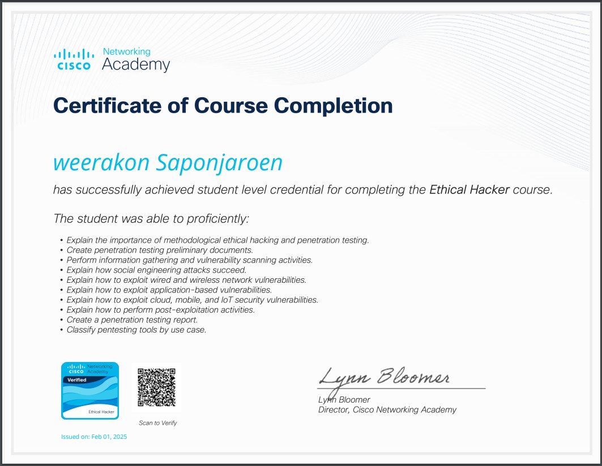
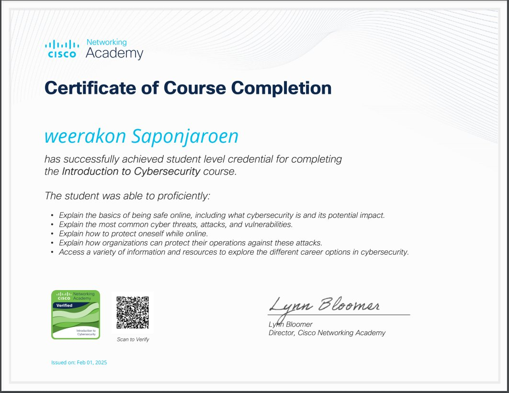

ผมชื่อ นายวีรกร สาพรเจริญ ชื่อเล่น "เอ็ม" อายุ 22 ปี ปัจจุบันอาศัยอยู่ที่จังหวัดอุดรธานี จบจากโรงเรียนบ้านดุงวิทยา และกำลังศึกษาต่อที่มหาวิทยาลัยราชภัฏอุดรธานี
เป็นคนที่มีความรับผิดชอบ ใฝ่เรียนรู้ และพร้อมพัฒนาตนเองอยู่เสมอ มีทักษะในการบริหารจัดการเวลาเป็นอย่างดี พร้อมทั้งมีความสามารถด้านการสื่อสาร ทั้งการพูดและการรับฟังความคิดเห็นของผู้อื่น รวมถึงสามารถปรับตัวให้เข้ากับสถานการณ์ต่าง ๆ ได้
เวลาว่างชอบเล่นเกม ฟังเพลง เล่นกีตาร์ และศึกษาความรู้ใหม่ ๆ ผ่านสื่อออนไลน์ สิ่งเหล่านี้ช่วยให้มีความคิดสร้างสรรค์และสามารถปรับตัวกับเทคโนโลยีสมัยใหม่ได้เป็นอย่างดี








ผมต้องการเป็นบุคลากรด้านเทคโนโลยีที่ไม่หยุดพัฒนา พร้อมเรียนรู้เทคโนโลยีใหม่ ๆ อยู่เสมอ เช่น AI, Cloud และ Cybersecurity เพื่อเพิ่มคุณค่าให้กับตัวเองและต่อยอดสู่การเป็นผู้เชี่ยวชาญด้าน IT ในอนาคต